|
Blue Brain BioExplorer
|
|
Blue Brain BioExplorer
|

Exploration relies on building software that combines data integration, analysis and interactive visualization to build, modify and navigate through large scientific datasets. For this, Blue Brain built and open-sourced the Blue Brain BioExplorer. The Blue Brain BioExplorer (BBBE), which started as an internal project, is now open source. It was originally developed to answer key scientific questions related to the Coronavirus as a use case and to deliver a visualization tool. Today, the BBBE allows to reconstruct, visualize, explore and describe in detail the structure and function of highly-detailed biological structures such as molecular systems, neurons, astrocytes, blood vessels, and more. You can see the first application of the BBBE in 'A Machine-Generated View of the Role of Blood Glucose Levels in the Severity of COVID-19' study, and see the SARS-COV-2 coronavirus as you have never seen it before by clicking on the following image!

On the third anniversary of the first lock-down, we look back at how #MachineLearning helped reveal the role of blood glucose levels in the severity of COVID-19. Imagine what else could be tackled with OpenScience.

Do you want want to know more about the full story? Read the Studies In Silico: An Interview With Cyrille Favreau On EPFL’s Blue Brain Project.

On the 27th of June 2023, the Blue Brain BioExplorer was presented at the PASC23 conference in Davos (Switzerland), as part of the MS4E - Scientific Visualization of Big Data minisymposium: Visual Scientific Exploration at Blue Brain, and Beyond
BioExplorer now benefits from NVIDIA OptiX backend compatibility, allowing it to fully utilize the NVIDIA RTX acceleration hardware capabilities for fast and high-quality rendering of scientific datasets. This advanced feature, along with the new stereo perspective camera, enables virtual reality use-cases with pure ray-tracing. Additionally, an AI-powered denoiser has been incorporated to enhance the real-time rendering quality.
Simply add the OptiX engine command line argument when starting the BBBE.
Note that, in order to offer the best experience on local desktops, the BBBE now also has a native viewer.
July 2022: The EPFL Blue Brain Project is featuring in the exciting Brain(s) exhibition at the Barcelona Centre of Contemporary Culture at the Fundación Telefónica Madrid.

The Blue Brain images on show were created with the BBBE. Checkout the news article for more information.
The BBBE application is built on top of a fork of Blue Brain Brayns 1.0.0 , the Blue Brain rendering platform. The BBBE uses the underlying technical capabilities of the rendering platform to create large scale and accurate 3D scenes from Jupyter notebooks.
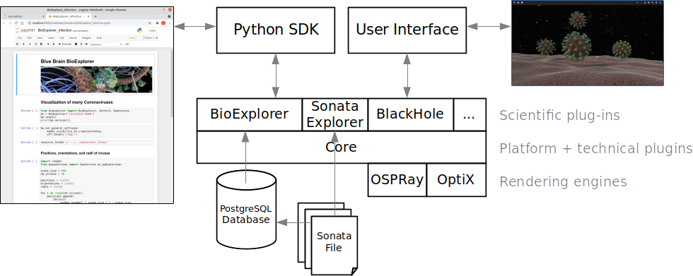
More information can be found in the architecture documentation.
Assemblies are groups of biological elements, such as proteins, membranes, glycans, etc. As an example, a virion is made of a lipid membrane, spikes proteins, an RNA sequence, etc, and all those elements belong to the same object. That’s why they need to belong to the same container, the assembly. Assemblies can have different shapes: Sphere, Cube, etc, that are automatically generated according to the parameters of individual components.
Proteins are loaded from PDB files. Atoms, non-polymer chemicals and bonds can be loaded and displayed in various color schemes: chain id, atom, residue, etc. Proteins also contain the amino acid sequences of the individual chains. Sequences that can be used to query glycosylation sites, or functional regions of the protein.
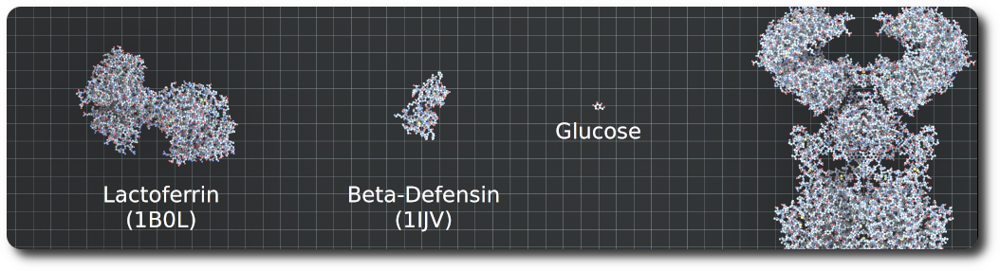
Glycans are small proteins that are attached to an existing protein of the assembly. Individual glycan trees are loaded from PDB files and attached to the glycosylation sites of the specified protein. By default, glycans are attached to all available glycosylation sites, but a set of specific sites can be specified.
Glycan trees models located in the python sdk test folder were generated with Glycam Builder.
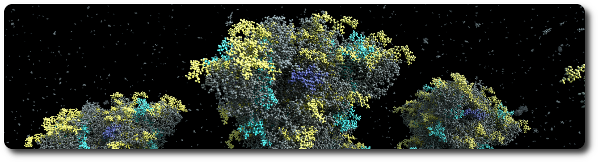
An RNA sequence can be loaded from a text sequence of codons. Various shapes can be selected to represent the RNA sequence: Trefoil knot, torus, star, etc. This allows the sequence to be efficiently packed into a given volume. A different color is assigned per type of codon.
Mesh-based membranes create membranes based on 3D meshes. This allows the construction of complex membranes where mesh faces are filled with proteins.
A viral particle is an assembly consisting of a membrane, an RNA sequence, and a given number of S, M and E proteins. The virus has a predefined spherical shape defined by its radius. The default parameters for the virus are a radius of 45 nanometers, 62 S proteins, 42 E proteins, and 50 M proteins. Dimensions and concentrations were retrieved from the literature.
A membrane is an assembly of phospholipids. Phospholipids structures are created following the process described in the VMD Membrane Proteins tutorial. The assembly itself is generated by the BioExplorer, for a given shape, and a number of instances of phospholipids.
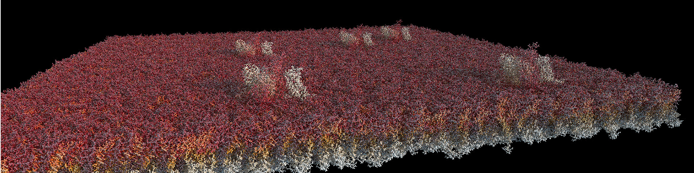
Vasculatures are loaded from the database (see the database schema and the example notebook for loading data from Sonata files). A vasculature is defined by the blood vessels or arrangement of blood vessels in an organ or part.
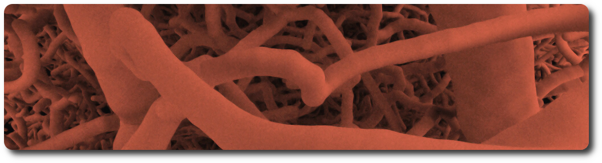
An example dataset can be downloaded from the Blue Brain Neuro-Glia-Vasculature Portal
References:
Circuits of neurons are loaded from the database (see the database schema and the example notebook for loading data from Sonata files) using their position and orientation. Each cell is composed of sections that form the axons and dendrites, as well as spines. Cell internals such as the nucleus and the mitochondria can be automatically generated, according to the data provided by the scientific literature. The BBBE also implements procedural generation of varicosities along the axon, as well as myelin sheaths.
An example dataset is available in the Model of Rat Non-barrel Somatosensory Cortex Anatomy publication. Please refer to the documentation of the Sonata format for information on how to load and analyze the model. A jupyter notebook has been included with basic examples of how to explore the data using the Blue Brain open-source packages NeuroM and Blue Brain SNAP.
References:
Circuits of astrocytes are loaded from the database (see the database schema and the example notebook for loading data from Sonata files) using their position and orientation. Astrocytes end-feet are connected to the vasculature using data stored in a dedicated connectome database schema. The BBBE allows end-feet to automatically adapt to the vasculature vessel size.
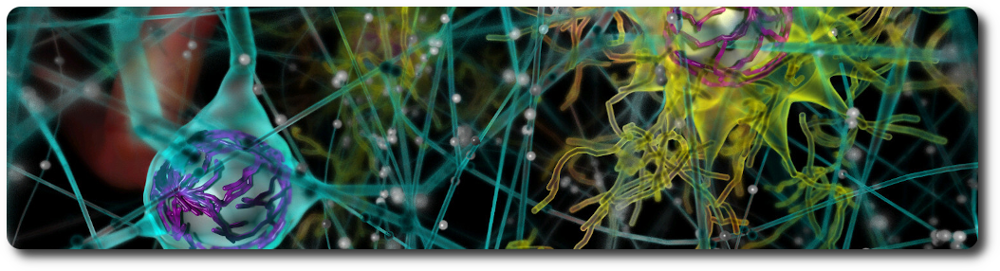
The neurons assembly allows visualization of brain microcircuits. Morphologies imported from ASC, SWC or H5 files into the BBBE database can be loaded an transformed in different ways: simple spheres or somas only, simple rendering of full morphologies using spheres, cones and cylinders, or advanced rendering of full morphologies using the signed distance field technique.
Multi-scale models of the rat and mouse brain integrate models of ion channels, single cells, microcircuits, brain regions, and brain systems at different levels of granularity (molecular models, morphologically detailed cellular models, and abstracted point neuron models). A neuronal microcircuit is the smallest functional ecosystem in any brain region that encompasses a diverse morphological and electrical assortment of neurons, and their synaptic interactions. Blue Brain has pioneered data-driven digital reconstructions and simulations of microcircuits to investigate how local neuronal structure gives rise to global network dynamics. These methods could be extended to digitally reconstruct microcircuits in any brain region.
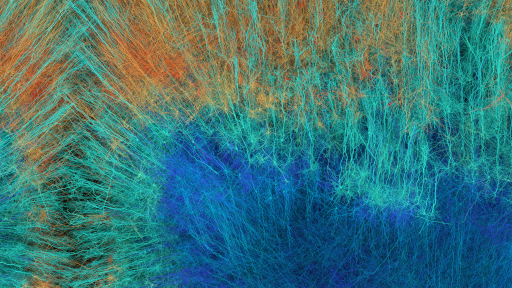
In the nervous system, a synapse is a structure that permits a neuron (or nerve cell) to pass an electrical or chemical signal to another neuron. Synapses can be classified by the type of cellular structures serving as the pre- and post-synaptic components. The vast majority of synapses in the mammalian nervous system are classical axo-dendritic synapses (an axon connecting to a dendrite).
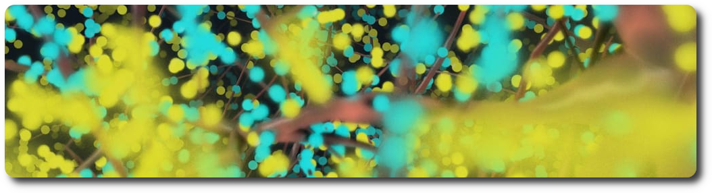
An example dataset is available on the Blue Brain Neuro-Glia-Vasculature Portal
References:
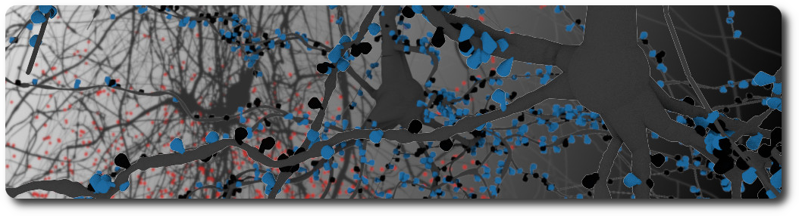
The spinal cord is an elongated nervous structure that together with the brain forms the central nervous system. It relays sensory and motor information between the brain and the body, thus controlling most somatic and autonomic body functions. In recent years, great progress has been made in creating digital atlases for the mouse brain, covering regions, cell composition and connectivity. For the spinal cord, however, such atlases do not yet exist. In this dissertation, I present the first versions of high-resolution 3D atlases of the spinal cords for five mammalian species: mouse, rat, marmoset, rhesus monkey, and human. First, I summarize the current state of the efforts to understand the spinal cord and its organization principles from anatomy (cytoarchitecture) to cell classifications and connectome principles. I then describe how the different properties of the spinal cord can help us in reconstructing the various spinal structures. Next, I present a workflow for data-driven reconstruction that can be used to create 3D models of the spinal cord of any species based on available annotated 2D microscopy images. I used data from Sengul, Watson, et al., 2012 to generate 3D reference volumes of the cytoarchitecture of the 5 mammalian species: mouse, rat, marmoset, rhesus monkey and human. Every 3D reference volume model comprises six levels of the spinal cytoarchitecture and defines their locations, shapes, and volumes. This allows us to compare the spinal cord of these 5 species. I find that all reconstructed spinal cords are remarkably similar, showing far fewer differences than the brains of the respective species. For the mouse spinal cord, I use data from the Allen Institute for Brain Science to generate a cell atlas for the three major spinal cell types: interneurons, motoneurons, and glial cells. The mouse spinal cell atlas comprises the densities and positions of 11,7 million cells in total with 2.7 million interneurons, about 31 thousand motoneurons, and 9.0 million glial cells. Next, I discuss how recent transcriptomic data can be used to assign a gene expression profile to each neuron in the spinal cell atlas. I present a preliminary analysis of RNA-sequencing and in situ RNA hybridization data aiming to develop a workflow for labeling of spinal cells with appropriate transcriptome profiles. Finally, I summarize the results of my dissertation as well as consequences and limitations of the underlying assumptions. This discussion ends with an outlook for how the atlas can be developed further in the future.
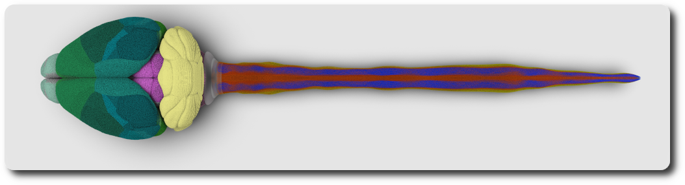
References:
Using the NEURON simulation package, the circuit information is loaded from disk, instantiating the various cell models (morphologies with ion channel distribution) and synaptic connections. The experimenter selects a stimulus protocol which will inject electrical current into the network and increase the membrane voltages of cells. As cells approach a threshold current, they release an action potential (AP) which will then propagate additional current changes to other cells via the synapses' release mechanisms. BBBE loads the simulation reports generated by NEURON and maps the voltages to the corresponding segments of the morphologies. A transfer function defines the mapping between a color and a voltage value.
The goal of computational synthesis of cortical dendritic morphologies is to be able to generate an arbitrary number of neurons (and also other cells, such as glia) that can be subsequently used in various types of simulation. Part of this goal is to recreate in the synthesized cells as many morphological features as possible.
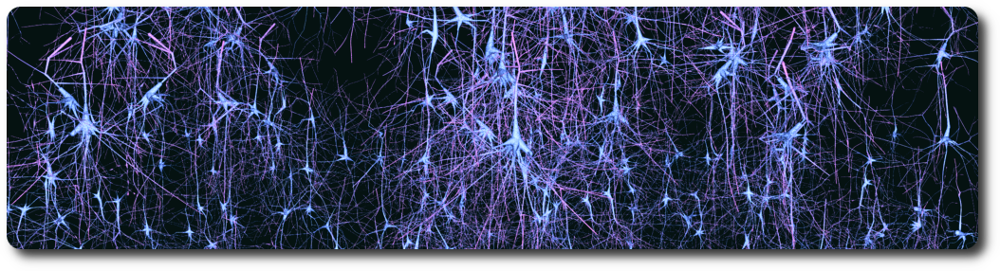
The synthesis scheme is based on the assumption that it is necessary to know the environment within which the cells are growing in order to recreate them accurately. Neuronal morphologies are influenced both by the embedding space and the presence of other cells. Their axons may target certain regions or the dendrites may mass in one region to collect input, such as the apical tuft of pyramidal cells. It is important therefore to synthesize the cells within biologically accurate volumes.
In the context of brain simulation, detecting touches between neurons is a essential part of the process. The BBBE provides a renderer that computes the distance between the geometries in the 3D scene.
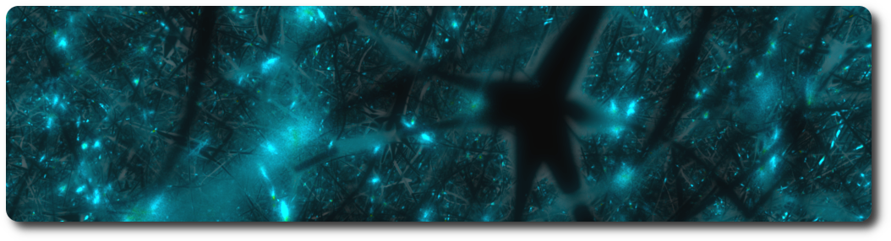
When a ray hits a geometry, a random secondary ray is sent in a direction belonging to an hemisphere defined by the normal to the surface. If that secondary ray hits another geometry, the distance between the initial hit and the new intersection is computed, and the corresponding color is assigned to the pixel. By default, red is for short distances (including touches), and green for longer ones. The notion of short and long is defined in the settings of the renderer.
White matter is composed of bundles, which connect various grey matter areas (the locations of nerve cell bodies) of the brain to each other, and carry nerve impulses between neurons. Myelin acts as an insulator, which allows electrical signals to jump, rather than coursing through the axon, increasing the speed of transmission of all nerve signals.
A Python notebook example demonstrates how to download and import white matter streamlines from the Allen Brain Institute website into the BBBE database. Another Python notebook demonstrates how to visualize the streamlines with the BBBE.
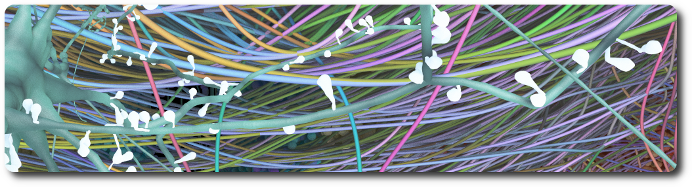
References:
The white matter feature contributed to generating images for the null model of the mouse whole-neocortex micro-connectome publication and produce the corresponding movie.

Tractography is a neuroimaging technique used in the field of neuroscience and medical imaging to visualize and study the white matter pathways in the human brain. White matter consists of bundles of nerve fibers (axons) that connect different regions of the brain and enable communication between them. Tractography helps researchers and clinicians map and understand these complex neural pathways.
The basic principle of tractography involves tracking the diffusion of water molecules in brain tissue. This technique is often referred to as diffusion-weighted magnetic resonance imaging (DW-MRI) or diffusion tensor imaging (DTI). Here's how it works:
Tractography has numerous applications in neuroscience and clinical practice. Researchers use it to study brain connectivity, understand the organization of neural circuits, and investigate neurological disorders. In the clinical setting, tractography can help surgeons plan brain surgeries, evaluate the extent of brain lesions, and assess the impact of brain injuries or diseases on white matter pathways. It has also been used to study conditions like Alzheimer's disease, multiple sclerosis, and stroke.
Different variations of tractography algorithms have been developed to improve the accuracy of tracking neural pathways, such as deterministic tractography and probabilistic tractography. Overall, tractography is a valuable tool for advancing our understanding of brain structure and function.
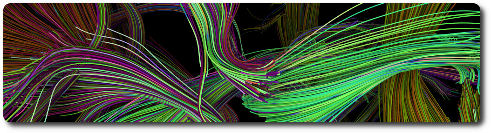
A Python notebook example demonstrates how to download streamlines from the Tractography Challenge ISMRM 2015 dataset and visualize them in the BBBE.
References:
An enzyme attracts substrates to its active site, catalyzes the chemical reaction by which products are formed, and then allows the products to dissociate (separate from the enzyme surface). The combination formed by an enzyme and its substrates is called the enzyme–substrate complex. The BBBE allows easy visualization of enzyme reactions by providing a substrate, a product, and a type of reaction (for example: Hexokinase).
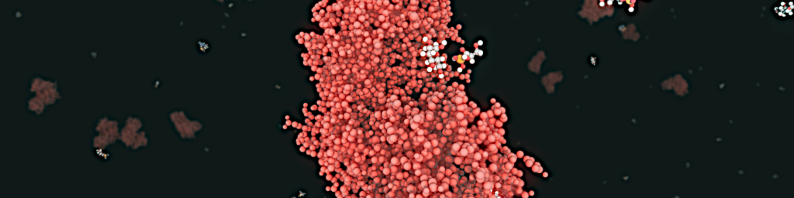
References:
Neuromodulation of neocortical microcircuits is one of the most fascinating and mysterious aspects of brain physiology. Despite over a century of research, the neuroscientific community has yet to uncover the fundamental biological organizing principles underlying neuromodulatory release. Phylogenetically, Acetylcholine (ACh) is perhaps the oldest neuromodulator, and one of the most well-studied. ACh regulates the physiology of neurons and synapses, and modulates neural microcircuits to bring about a reconfiguration of global network states. ACh is known to support cognitive processes such as learning and memory, and is involved in the regulation of arousal, attention and sensory processing. While the effects of ACh in the neocortex have been characterized extensively, integrated knowledge of its mechanisms of action is lacking. Furthermore, the ways in which ACh is released from en-passant axons originating in subcortical nuclei are still debatable. Simulation-based paradigms play an important role in testing scientific hypotheses, and provide a useful framework to integrate what is already known and systematically explore previously uncharted territory. Importantly, data-driven computational approaches highlight gaps in current knowledge and guide experimental research. To this end, I developed a multi-scale model of cholinergic innervation of rodent somatosensory cortex comprising two distinct sets of ascending projections implementing either synaptic (ST) or volumetric transmission (VT). The model enables the projection types to be combined in arbitrary proportions, thus permitting investigations of the relative contributions of these two transmission modalities. Using our ACh model, we find that the two modes of cholinergic release act in concert and have powerful desynchronizing effects on microcircuit activity. Furthermore we show that this modeling framework can be extended to other neuromodulators, such as dopamine and serotonin, with minimal constraining data. In summary, our results suggest a more nuanced view of neuromodulation in which multiple modes of transmitter release - ST vs VT - are required to produce synergistic functional effects.
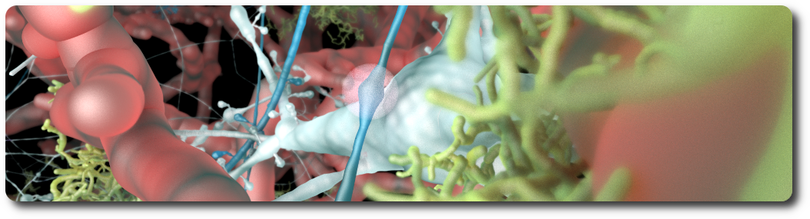
References:
The BBBE represents a highly adaptable and flexible system tailored to explore a wide array of scientific datasets. This exceptional platform has been engineered to accommodate a diverse range of data sources and formats. Its extensibility lies in the incorporation of plugins, which serve as add-on modules expanding the system's capabilities.
Among the plugins available in the extensions folder, there are dedicated modules catering to specific scientific domains. For instance, the cosmology plugin empowers researchers to delve into and analyze astronomical datasets. On the other hand, the medical imaging plugin facilitates in-depth investigations of medical datasets, making it possible for healthcare professionals and scientists to examine and interpret various types of medical images with remarkable precision.
Beyond these examples, BBBE boasts the potential to accommodate additional plugins, making it a powerful platform for scientists from diverse disciplines to explore and make sense of complex scientific data efficiently and effectively.
Scientific visualization plays a vital role in the field of space exploration by enabling researchers to interpret and communicate complex astronomical data in a visually compelling manner. It involves the use of advanced computer graphics techniques to transform raw data collected from telescopes, satellites, and spacecraft into visually stunning and informative representations. Through scientific visualization, astronomers can create accurate and detailed models of celestial objects, such as galaxies, nebulae, and planetary systems, aiding in the understanding of their formation, evolution, and behavior. It allows scientists to explore and analyze vast datasets, unveiling patterns, relationships, and hidden structures that may otherwise go unnoticed. Additionally, scientific visualization serves as a powerful tool for public outreach, engaging and inspiring the general public by presenting the awe-inspiring beauty and scientific discoveries of the cosmos in accessible and captivating ways. Overall, scientific visualization plays a crucial role in advancing our knowledge of the universe and fostering a deeper appreciation for the wonders of space exploration.
The port of Shadertoy's black hole implementation to the BBBE represents an exciting fusion of artistic creativity and scientific exploration. Shadertoy, a popular platform for shader development and visual effects, offers a stunning black hole simulation that captures the mesmerizing visual aspects of these cosmic entities. The integration of Shadertoy's black hole into the BBBE allows users to engage with the visualization in a more immersive and scalable way.

References:
Medical imaging is a vital component of modern healthcare, enabling healthcare professionals to visualize internal structures and diagnose various medical conditions.
DICOM stands for "Digital Imaging and Communications in Medicine." It is a widely used standard for the storage, transmission, and sharing of medical images and related information in the healthcare industry. DICOM was created by the National Electrical Manufacturers Association (NEMA) and the American College of Radiology (ACR) to ensure interoperability and compatibility among various medical imaging devices and software.
The BBBE DICOM plugin implements the loading of DICOM datasets.

Visualizing environmental data holds immense significance in understanding and addressing complex environmental challenges. By transforming vast datasets into clear, graphical representations, we can grasp the intricate interactions between various environmental factors.
Visualizing geological data is of paramount importance in the field of geology as it provides a powerful means to comprehend and interpret complex information. By converting raw data into visually appealing representations, geologists gain a deeper understanding of the Earth's composition, structure, and processes. Maps, cross-sections, and 3D models enable researchers to identify patterns, trends, and anomalies that may remain obscured in raw datasets. Visualization aids in making informed decisions related to resource exploration, hazard assessment, and environmental management. Moreover, presenting geological findings visually enhances communication with colleagues, policymakers, and the public, fostering greater awareness and support for geological research and its implications for society. The BBBE serves as an indispensable tool in unraveling the mysteries of our planet and harnessing its resources responsibly.
The core challenge lies in modeling the behavior of superheated plasma, the fuel for this revolutionary energy source. To simulate this complex phenomenon, the plasma is envisioned as an array of particles, with each particle intricately characterized by its position and direction. The direction vector of each particle not only represented its position but also served as a direct indicator of the particle's charge, a crucial factor in the fusion reaction.

A simple API if exposed via the BBBE python library. The API allows scientists to easily create and modify assemblies, according the biological parameters. The BBBE programming language is not necessarily reflecting the underlying implementation, but is meant to be as simple as close as possible to the language used by the scientists to describe biological assemblies.
The BBBE Python SDK is available on pypi.
A large number of examples (as python notebooks) are provided in the notebooks folder.
See here for detailed documentation of the source code.
BBBE binaries are publicly available as docker images. BBBE is designed to run in distributed mode, and is composed of 3 modules: A server, a python SDK, and a web user interface. This means that there are 3 docker images to be downloaded on run. Those images can of course run on different machines.
Note: The BBBE is NOT a web application. It uses web technologies for the user interface but the BBBE is a single session system that requires one back-end instance per user. There is no limitation in the number of user interface instances that can connect to the back-end, but they will all be sharing the same session.
In this example, we will expose the server on port 5000, the python SDK jupyter notebooks on port 5001, and the user interface on port 5002. One is free to change those ports at will.
Note that a local folder can be specified to access personal notebooks:
A PostgreSQL Database can be created as a Docker image and used by the BBBE as a storage component. More information on how to create and populate the database with sample datasets can be found in the dedicated Docker Database documentation.

Run the following statements to build the BBBE.
Run the BBBE with the following command to start the backend:
Considering that the BBBE server is running on the local host, on port 5000, the simplest example to visualize a SARS-COV-2 coronavirus is:
BBBE is available to download and use under the GNU General Public License (GPL, or “free software”). The code is open sourced with approval from the open sourcing committee and principal coordinators of the Blue Brain Project in February 2022.
For more information on BBBE, please contact:
The development of this software was supported by funding to the Blue Brain Project, a research center of the École polytechnique fédérale de Lausanne (EPFL), from the Swiss government’s ETH Board of the Swiss Federal Institutes of Technology.
COPYRIGHT 2020–2024 Blue Brain Project/EPFL